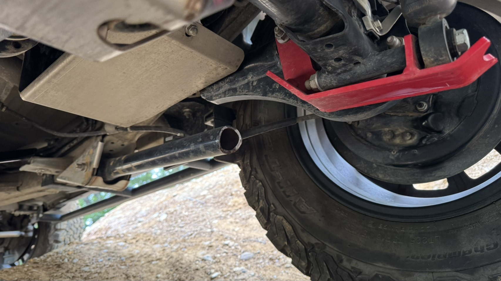
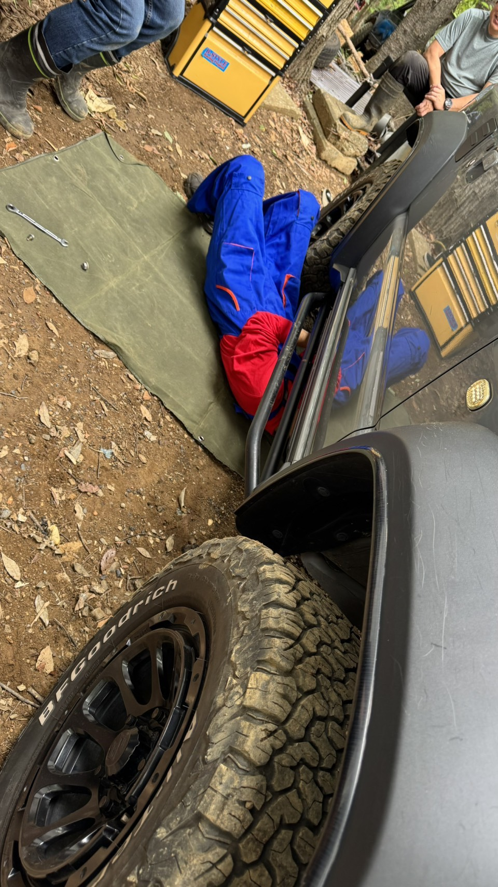
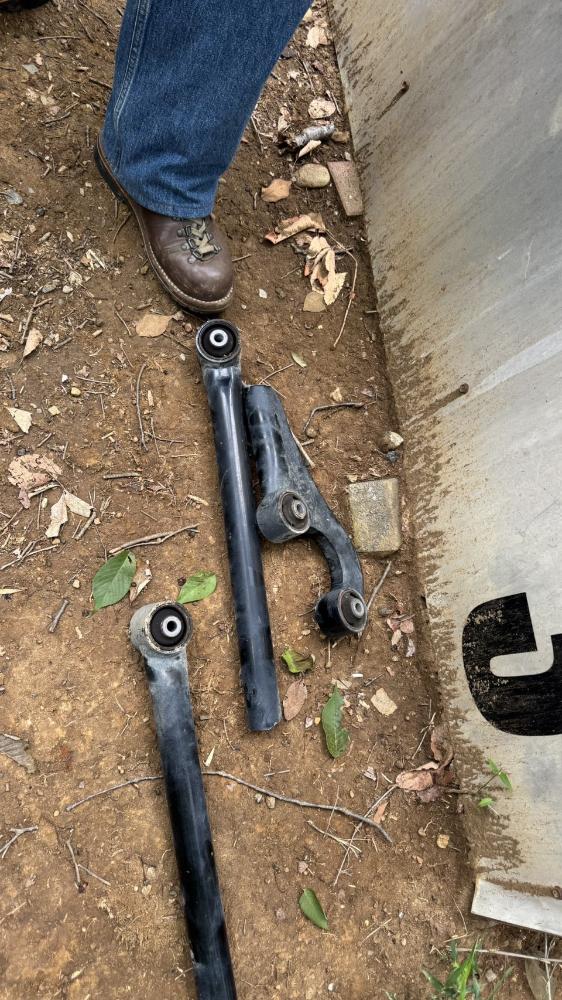
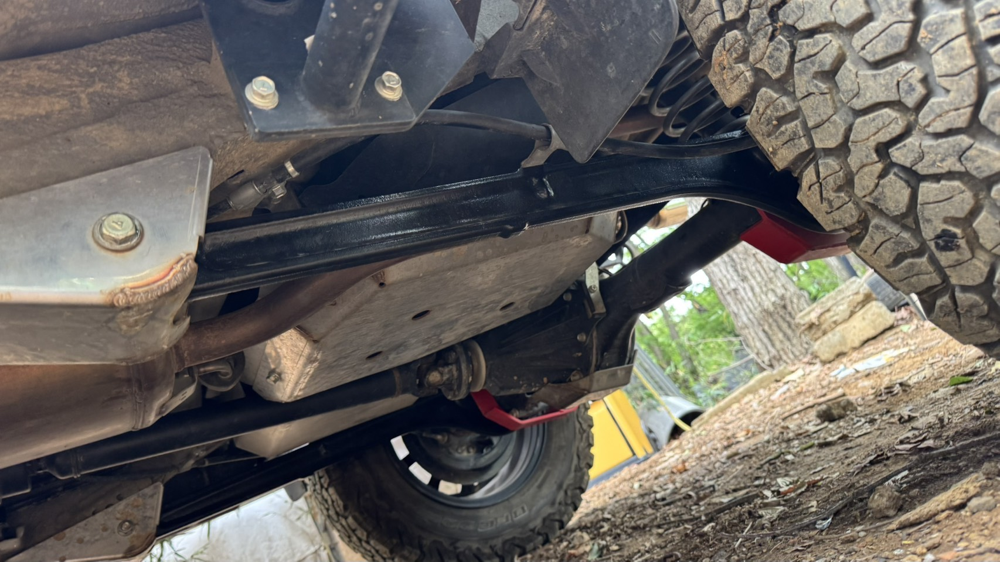

皆様こんにちは、B-STYLEです。
6月7日の練習会で、衝撃的なトラブルが発生しました。参加者のお客様のジムニー、リアのサスペンションアームが走行中に真っ二つに折れてしまいました。

このお客様がオフロードを走るのはまだ数回目。アームも取り付けてから日が浅く、ほぼ新品の状態でした。
ドライバーは初心者で、激しいセクションを攻めていたわけでもありません。いわゆる「普通の練習走行」の範囲です。
それでも折れました。
写真を見ていただくとわかりますが、このアームはパイプ形状で作られています。
パイプ構造は軽量化には有利ですが、オフロード走行で発生するねじれ・衝撃荷重に対して著しく強度が劣ります。特にジムニーのリアは、岩・段差・スタックからの引き出し時に想像以上の負荷がかかります。
新品・初心者・普通の走行——この条件でも折れる。それがこのアームの実力です。


幸いなことに、チームメンバーが純正アームを予備で持参していました。
その場で緊急交換を実施。お客様は無事に走行を続けることができました。こういうときに備品を持っているメンバーがいると本当に助かります。

トラブルを経験したお客様は、後日あらためてアームのご注文をいただきました。
「やっぱりちゃんとしたものに替えたい」という気持ち、よくわかります。転んでから気づくのは仕方ないですが、できれば転ぶ前に知っておいてほしい——それがこのブログを書いた理由です。
【B-STYLEからの正直なひと言】
パイプ形状のリアアーム、私はおすすめしません。オフロードを走るなら、サスペンションは命綱です。コストを削るべき場所ではないと、今回の事例があらためて教えてくれました。パーツ選びで迷っている方は、ぜひご相談ください。
引き続きB-STYLEをよろしくお願いいたします。